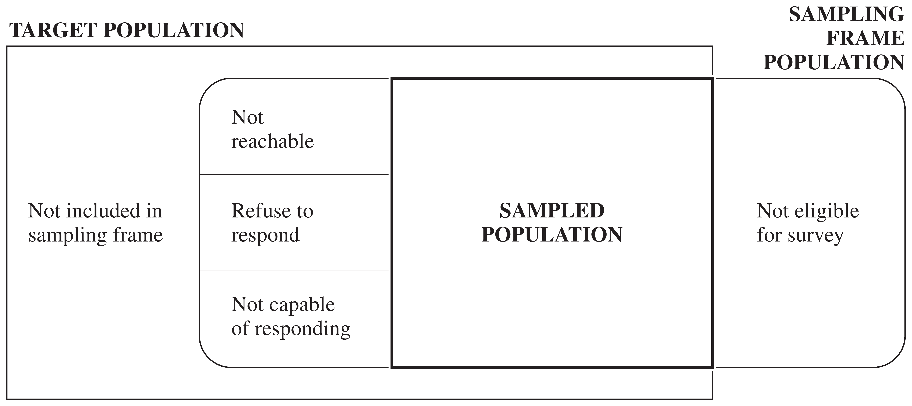
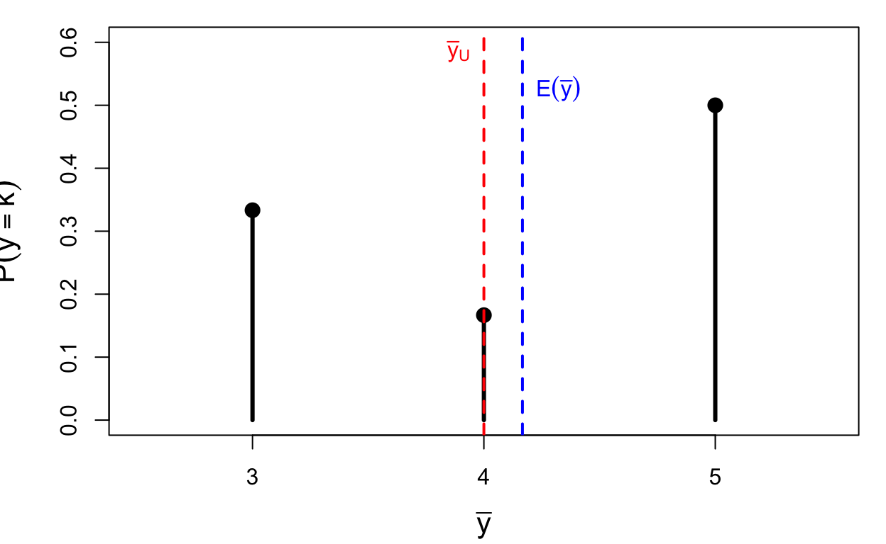

1 Introduction to Sampling Survey
A sample survey collects information about a population by measuring only part of it. This chapter introduces the main ideas. We start with a survey that went badly wrong, then define the basic terms, describe the errors that can spoil a survey, and sketch the main designs studied in the rest of the book. The second half sets up the framework of probability sampling that all later chapters use: samples and their probabilities, inclusion probabilities and sampling weights, population quantities, sampling distributions, and bias, variance and mean squared error. The material corresponds to Chapter 1 and Section 2.2 of Lohr, and Chapters 2 and 3.1–3.4 of Scheaffer et al.
1.1 A Bad Sampling Example
Shere Hite’s book Women and Love: A Cultural Revolution in Progress (1987) reported a number of widely quoted results:
- 84% of women are “not satisfied emotionally with their relationships” (p. 804);
- 70% of all women “married five or more years are having sex outside of their marriages” (p. 856);
- 95% of women “report forms of emotional and psychological harassment from men with whom they are in love relationships” (p. 810);
- 84% of women report forms of condescension from the men in their love relationships (p. 809).
The book was widely criticized in newspaper and magazine articles throughout the United States. The Time magazine cover story “Back Off, Buddy” (October 12, 1987) called the conclusions of the study “dubious” and “of limited value”. The problem was not the arithmetic but the way the data were collected:
- The sample was self-selected. The recipients of the questionnaire decided whether they would be in the sample. Hite mailed 100,000 questionnaires and only 4.5% were returned.
- The questionnaires went to particular groups, such as professional women’s groups, counseling centers, church societies and senior citizens’ centers, whose members may hold views different from those of other women in the United States.
- The questionnaire was very long. It had 127 essay questions, most with several parts. Who will tend to return such a survey? Probably women with strong feelings about the subject, who may differ systematically from those who did not reply.
- Many questions were vague (what counts as “love”?), which makes the percentages hard to interpret.
- Many questions were leading, suggesting to the respondent which answer to give.
A large number of responses (4,500) did not make up for any of these problems. The rest of this chapter names the problems precisely, and the rest of the book shows how a properly designed probability sample avoids the first two.
1.2 Elements of Sampling Problems
1.2.1 Basic definitions
- Observation unit. An object on which a measurement is taken; also called an element. In studies of human populations, the observation units are often individuals.
- Target population. The complete collection of observations we want to study. Defining the target population is often harder than it seems. Should a political poll target all adults eligible to vote, all registered voters, or everyone who voted in the last election?
- Sample. A subset of a population.
- Sampled population. The collection of all possible observation units that might have been chosen in the sample: the population from which the sample was actually taken.
- Sampling unit. A unit that can be selected for a sample. We may want to study individuals but have no list of them. Instead we select households, which are then the sampling units, while the individuals remain the observation units.
- Sampling frame. A list, map or other specification of the sampling units from which the sample may be selected, for example a list of telephone numbers, street addresses or farms.
1.2.2 Target and sampled populations
In an ideal survey the sampled population equals the target population. This ideal is rarely met (Figure 1.1). Some members of the target population are not in the sampling frame. Some who are in the frame cannot be reached, refuse to respond, or are not capable of responding. And the frame may contain units that are not eligible for the survey at all.

In the Hite study the element was an individual woman and the target population was all adult U.S. women. The sampled population, however, was women who belonged to the organizations that received questionnaires and who would complete and return them.
1.3 Selection Bias
Selection bias occurs when part of the target population is not in the sampled population or, more generally, when some population units are sampled at a different rate than intended by the investigator. A sample of convenience is often biased, because the units that are easiest to select, or most likely to respond, are usually not representative of the harder-to-select or nonresponding units. For example:
- A convenience sample of adolescents used to study communication about AIDS probably overestimated how much parents and teenagers talk about it. Adolescents willing to talk to investigators are also more likely to talk to other authority figures, such as their parents.
- Misspecifying the target population. Polls before the 1994 Arizona gubernatorial primary predicted that Eddie Basha would trail by 9 or more points; he won with 37% of the vote. The polls targeted people who had voted in past primaries and missed the new rural voters who supported Basha.
Selection bias has several common sources.
Undercoverage is the failure to include all of the target population in the sampling frame. The U.S. Behavioral Risk Factor Surveillance System, a telephone survey, misses households without telephones and for many years missed households with only cell phones. Coverage varies by region and by income, so undercoverage can bias the estimates.
Overcoverage is the inclusion in the sampling frame of units that are not in the target population, for example when interviewers include respondents under 18 in a radio survey meant for adults only.
Nonresponse is the failure to obtain responses from all of the units chosen for the sample. It distorts the results even when the other sources of selection bias are minimized. Nonrespondents often differ in critical ways from respondents, but the extent of the difference is usually unknown. Some published surveys have response rates as low as 10%. It is difficult to generalize from such a survey when 90% of the sample could not be reached or refused to take part.
1.4 Measurement Error
When a response differs from the true value, measurement error has occurred. Measurement bias occurs when the responses tend to differ from the truth in one direction. Like selection bias, measurement bias must be considered and minimized at the design stage; no amount of data analysis can remove it afterwards. Some sources of measurement error:
- People do not always tell the truth. Farmers receiving food aid may underreport their crop yields, hoping to receive more aid.
- People do not always understand the questions. A 1993 Roper poll found that 25% of Americans did not believe the Holocaust had happened. The question used a confusing double negative. When it was reworded, only 1% thought it “possible” that the Holocaust never happened.
- People forget. In the U.S. National Crime Victimization Survey (NCVS), respondents asked about crimes in the last six months sometimes include events from further back. This is called telescoping.
Careful questionnaire design reduces measurement error:
- Always test the questions on a small group before the survey is carried out.
- Keep the questions simple and clear. Belson (1981) tested the question “What proportion of your evening viewing time do you spend watching news programmes?” on 53 people. Only 14 interpreted “proportion” correctly, as a percentage, part or fraction.
- Use specific questions instead of general ones. Instead of asking “Did anyone attack you in the last six months?”, the NCVS asks a detailed series of questions: “With any weapon, for instance a gun or knife”, “With anything like a baseball bat, frying pan, scissors, or stick”, and so on.
1.5 Sampling and Nonsampling Errors
Sampling error results from taking one sample instead of examining the whole population. A different sample would likely give a different result. Sampling error is what a poll’s “margin of error” describes, and because it comes from the random selection of the sample, it can be quantified in probabilistic terms. Most of this book is about measuring and reducing it.
Nonsampling errors, such as selection bias and measurement error, cannot be attributed to sample-to-sample variability. They are often far larger than the sampling error. A survey may proudly report a margin of error of 3% based on a 30% response rate, while ignoring the large selection bias that such a response rate may cause.
1.5.1 Why sample at all?
If samples have errors, why not always take a census of the whole population?
- Cost. A sample provides reliable information at far less cost than a census, and with a probability sample the sampling error can be quantified. Some measurements are destructive (for example, pulverizing a cookie to measure its fat content), so a census is not even possible.
- Speed. Data from a sample can be collected and processed more quickly, so the estimates are timely. An unemployment rate for 2005 published in 2015 would be useless.
- Accuracy. Estimates from a sample can be more accurate than those from a census. A census requires a large administrative effort with many data collectors, while a smaller operation allows the investigators to be more careful and to reduce nonsampling errors.
1.6 Types of Probability Samples
In a probability sample, every unit in the population has a known, positive chance of being selected, and the sample is chosen by a random mechanism. This removes selection bias due to the investigator’s choices, and it makes it possible to quantify the sampling error. Here are the main designs; each has its own chapter later in the book.
To compare the designs we use synthetic populations of \(N = 1000\) units, with the \(y\)-values drawn from exponential distributions. The population for SRS and stratified sampling (Figure 1.2 and Figure 1.3) consists of four strata of sizes 400, 300, 200 and 100 whose means differ a lot: each is an exponential distribution with mean 1.5, shifted by 0, 4, 8 and 12 respectively. The population for cluster sampling (Figure 1.4) consists of ten clusters whose sizes range from 40 to 160 units, exponential with means from 2 to 8. Each design selects \(n = 60\) units, shown in red; the unselected units are grey.
Simple random sampling. A simple random sample (SRS) is the simplest probability sample. An SRS of size \(n\) is taken when every possible subset of \(n\) units in the population has the same chance of being the sample. The design uses no information about the groups: in Figure 1.2 the 1000 units are listed in an arbitrary order, and 60 of them are chosen at random. By chance, a group may be over- or under-represented, and the sample values range over the whole spread of the population.
Stratified random sampling. In a stratified random sample, the population is divided into subgroups called strata, and an SRS is selected independently from each stratum. Strata are often subgroups of interest, such as provinces, terrain types or firm sizes. In Figure 1.3 the same 1000 units are arranged by stratum, with the strata sorted by their means (dashed lines). The sample is allocated in proportion to the stratum sizes, \(60 \times N_h/1000\), so 24, 18, 12 and 6 units are drawn from the four strata. Every stratum is represented in the sample in a fixed proportion. Stratification often increases precision, because units within a stratum tend to be more similar than units selected at random from the whole population. Here the stratum means are far apart while the spread within each stratum is small, so the differences between the strata, which make up most of the variation in Figure 1.2, no longer contribute to the sampling error.

Cluster sampling. In a cluster sample, the observation units are grouped into larger sampling units called clusters. For example, to survey Lutheran church members in Minneapolis without a list of all members, we could take an SRS of churches (the clusters) and then subsample members within each selected church (the observation units). In Figure 1.4 the population consists of ten clusters of different sizes, from 40 to 160 units, sorted by their means. Three clusters are selected at random (shaded), and 20 units are subsampled in each. This is convenient, since only three clusters need to be visited, but the seven clusters that are not selected contribute nothing to the sample. When the cluster means differ, the estimate depends heavily on which clusters happen to be chosen. Members of the same church may likewise be more similar to each other than a random sample of Lutherans would be. A cluster sample therefore often provides less information than an SRS of the same size, and the gain in convenience must be weighed against the loss in precision.

Later chapters add two more ingredients: estimators that use auxiliary information (ratio and regression estimation), and designs that select units with unequal probabilities, typically proportional to a measure of size.
1.7 A Framework for Probability Sampling
We now make the idea of a probability sample precise. The key concepts are the population, the sample, the probabilities of the samples, the inclusion probabilities, and the bias, variance and mean squared error of an estimator.
1.7.1 The population and its samples
The finite population, or universe, of \(N\) units is denoted by the index set \[ \mathcal{U} = \{1, 2, \ldots, N\}. \] Out of this population we can choose various samples, which are subsets of \(\mathcal{U}\). The sample actually chosen is denoted \(\mathcal{S}\); it consists of \(n\) of the units in \(\mathcal U\).
For example, suppose \(\mathcal{U} = \{1,2,3,4\}\), so \(N=4\). There are \(\binom42 = 6\) different samples of size \(n=2\): \[ \mathcal{S}_1=\{1,2\},\quad \mathcal{S}_2=\{1,3\},\quad \mathcal{S}_3=\{1,4\},\quad \mathcal{S}_4=\{2,3\},\quad \mathcal{S}_5=\{2,4\},\quad \mathcal{S}_6=\{3,4\}. \]
1.7.2 Probability sampling
In probability sampling, each possible sample \(\mathcal{S}\) has a known probability \(P(\mathcal{S})\) of being chosen, and the probabilities of all possible samples sum to 1. The collection of these probabilities is the sampling design. One possible design for a sample of size 2 from \(\mathcal{U}=\{1,2,3,4\}\) is \[ P(\mathcal{S}_1)=\tfrac13,\quad P(\mathcal{S}_4)=\tfrac16,\quad P(\mathcal{S}_6)=\tfrac12, \quad P(\mathcal{S}_2)=P(\mathcal{S}_3)=P(\mathcal{S}_5)=0 . \] The probabilities are known before the sample is drawn. One way to carry out this design is to put six balls in a box, two labeled 1, one labeled 4 and three labeled 6, draw one ball at random, and take the sample \(\mathcal S_i\) whose label is drawn. An SRS is the special design in which all six samples have probability \(1/6\).
1.7.3 The values \(y_i\)
Let \(y_i\) be a characteristic of the \(i\)th unit in the population, such as the corn yield of farm \(i\):
| \(i\) | 1 | 2 | 3 | \(\cdots\) | \(N\) |
|---|---|---|---|---|---|
| \(y_i\) | \(y_1\) | \(y_2\) | \(y_3\) | \(\cdots\) | \(y_N\) |
We treat each \(y_i\) as a fixed quantity. If farm 723 is in the sample, its corn yield \(y_{723}\) is known exactly; if it is not, \(y_{723}\) is unknown but still fixed. The only randomness is in which units are selected. This is the design-based (or randomization) approach, followed by Lohr and by this book. (Scheaffer et al. use \(Y_i\) for a random variable and \(y_i\) for its value.)
1.7.4 Inclusion probabilities and sampling weights
Once a sampling design is chosen, each unit in the population has a known probability of appearing in the sample, its inclusion probability \[ \pi_i = P(\text{unit } i \text{ is in the sample}) = \sum_{\mathcal S \ni i} P(\mathcal S), \tag{1.1}\] the sum of the probabilities of all possible samples that contain unit \(i\). In probability sampling all the \(\pi_i\) are known before the survey starts, and we assume \(\pi_i > 0\) for every unit, so that every unit has a chance to be observed.
For the design above, unit 1 belongs only to \(\mathcal S_1 = \{1,2\}\) among the samples with positive probability, so \[ \pi_1 = P(\{1,2\}) = \tfrac13, \qquad \pi_2 = P(\{1,2\})+P(\{2,3\}) = \tfrac13+\tfrac16=\tfrac12, \] \[ \pi_3 = P(\{2,3\})+P(\{3,4\}) = \tfrac16+\tfrac12=\tfrac23, \qquad \pi_4 = P(\{3,4\}) = \tfrac12 . \] The inclusion probabilities do not sum to 1. They sum to 2, because every sample contains \(n = 2\) units; in general \(\sum_{i=1}^N \pi_i = n\) for a design with fixed sample size \(n\).
The sampling weight of unit \(i\) is \(w_i = 1/\pi_i\). It can be thought of as the number of population units that a sampled unit represents. For many sampling designs, the estimator of the population total can be written as \[ \hat t = \sum_{i \in \mathcal{S}} w_i \, y_i = \sum_{i \in \mathcal{S}} \frac{y_i}{\pi_i}. \] For an SRS, \(\pi_i = n/N\) and \(w_i = N/n\) for every unit; for the other designs in this book, the weights differ between units.
1.7.5 Population quantities
The quantities we want to estimate are characteristics of the fixed values \(y_1, \ldots, y_N\): \[ \textbf{total: } t = \sum_{i=1}^N y_i, \qquad \textbf{mean: } \bar y_{U} = \frac{t}{N}, \] \[ \textbf{variance: } S^2 = \frac{1}{N-1}\sum_{i=1}^N (y_i-\bar y_{U})^2, \qquad \textbf{standard deviation: } S = \sqrt{S^2}. \] Scheaffer et al. instead use \(\sigma^2 = \frac1N \sum_{i=1}^N (y_i - \bar y_{U})^2\), dividing by \(N\) rather than \(N-1\). The two differ only by the factor \((N-1)/N\).
Example: a population proportion. Let \(y_i = 1\) if unit \(i\) has some attribute and \(y_i = 0\) otherwise:
| \(i\) | 1 | 2 | 3 | 4 | 5 |
|---|---|---|---|---|---|
| \(y_i\) | 1 | 0 | 0 | 0 | 1 |
Then the total is the number of units with the attribute and the mean is the population proportion: \[ t = 1+0+0+0+1 = 2, \qquad \bar y_{U} = \frac{2}{5} = 0.4, \] \[ S^2 = \frac{1}{5-1}\Big((1-0.4)^2\times 2 + (0-0.4)^2\times 3\Big) = 0.3 . \] For a 0/1 variable, \(S^2 = \frac{N}{N-1}\,p(1-p)\) with \(p = \bar y_U\); here \(\frac54(0.4)(0.6) = 0.3\). As \(N\) grows, \(S^2 \to p(1-p)\).
Example: number of devices per household. A population of \(N = 4\) households has the following numbers of devices:
| \(i\) | 1 | 2 | 3 | 4 |
|---|---|---|---|---|
| \(y_i\) | 2 | 4 | 4 | 6 |
\[ t = 2+4+4+6 = 16, \qquad \bar y_{U} = \frac{16}{4} = 4, \qquad S^2 = \frac{(2-4)^2+(4-4)^2+(4-4)^2+(6-4)^2}{4-1} = \frac{8}{3}. \]
1.7.6 Statistics and sampling distributions
A statistic is a function of the observations in the sample, used to estimate a population quantity. Since the sample is random, so is the statistic. Its sampling distribution is its distribution under repeated sampling: the values it takes over all possible samples, with the probabilities \(P(\mathcal S)\) of those samples.
For example, to estimate the total \(t\) we may use the sample mean scaled up by the population size, \[ \bar y = \frac{1}{n}\sum_{i\in\mathcal{S}} y_i, \qquad \hat t = N\bar y . \] Take the devices population (\(\bar y_U = 4\), \(t = 16\)) with the sampling design of the previous sections. For each of the six possible samples of size 2 we can compute \(\bar y\):
| \(\mathcal S\) | \(\{1,2\}\) | \(\{1,3\}\) | \(\{1,4\}\) | \(\{2,3\}\) | \(\{2,4\}\) | \(\{3,4\}\) |
|---|---|---|---|---|---|---|
| values | 2, 4 | 2, 4 | 2, 6 | 4, 4 | 4, 6 | 4, 6 |
| \(P(\mathcal S)\) | \(1/3\) | \(0\) | \(0\) | \(1/6\) | \(0\) | \(1/2\) |
| \(\bar y\) | 3 | 3 | 4 | 4 | 5 | 5 |
Collecting the samples that give the same value of \(\bar y\), and adding their probabilities, gives the sampling distribution of \(\bar y\) (Figure 1.5):
| \(k\) | 3 | 4 | 5 |
|---|---|---|---|
| \(P(\bar y = k)\) | \(1/3\) | \(1/6\) | \(1/2\) |

1.7.7 Bias, variance and mean squared error
The sampling distribution tells us how good an estimator \(\hat\theta\) of a population quantity \(\theta\) is. Three summaries are used: \[ \text{Bias}(\hat\theta) = E(\hat\theta) - \theta, \qquad V(\hat\theta) = E\big[(\hat\theta - E(\hat\theta))^2\big], \qquad \text{MSE}(\hat\theta) = E\big[(\hat\theta - \theta)^2\big]. \] The variance measures the spread of the estimates around their own mean; the MSE measures their spread around the true value.
For \(\bar y\) in the example, \[ E(\bar y) = 3\times\tfrac13 + 4\times\tfrac16 + 5\times\tfrac12 = \frac{25}{6}, \qquad \text{Bias}(\bar y) = \frac{25}{6} - 4 = \frac16 , \] \[ V(\bar y) = \Big(3-\tfrac{25}{6}\Big)^2\tfrac13 + \Big(4-\tfrac{25}{6}\Big)^2\tfrac16 + \Big(5-\tfrac{25}{6}\Big)^2\tfrac12 = \frac{29}{36} \approx 0.8056, \] \[ \text{MSE}(\bar y) = (3-4)^2\cdot\tfrac13 + (4-4)^2\cdot\tfrac16 + (5-4)^2\cdot\tfrac12 = \frac56 \approx 0.8333 . \] The estimator is biased under this design. The design favours the sample \(\{3,4\}\), which contains the household with 6 devices, so \(\bar y\) tends to be too large. Correspondingly \(\hat t = 4\bar y\) has \(E(\hat t) = 50/3 \approx 16.67\), a bias of \(2/3\) for \(t = 16\).
MSE = Bias² + Variance. Adding and subtracting \(E(\hat\theta)\), \[ \text{MSE}(\hat\theta) = E\Big[\big(\hat\theta - E(\hat\theta)\big) + \big(E(\hat\theta) - \theta\big)\Big]^2 = V(\hat\theta) + \big(\text{Bias}(\hat\theta)\big)^2 , \] because the cross term \(2\,\text{Bias}(\hat\theta)\,E\big[\hat\theta - E(\hat\theta)\big]\) is zero. In the example, \((1/6)^2 + 29/36 = 1/36 + 29/36 = 30/36 = 5/6\), which agrees with the direct calculation. In particular, when \(\hat\theta\) is unbiased, \(\text{MSE}(\hat\theta) = V(\hat\theta)\).
The same population under SRS. If instead all six samples have probability \(1/6\) (an SRS), the six values of \(\bar y\) are \(3, 3, 4, 4, 5, 5\), so \(E(\bar y) = 4 = \bar y_U\): the estimator is now unbiased. Its variance is \(\frac16(1+1+0+0+1+1) = \frac23\), which agrees with the SRS formula \(\big(1-\frac nN\big)\frac{S^2}{n} = \frac12\cdot\frac{8/3}{2} = \frac23\) of Section 3.2. The short R enumeration below checks both designs.
Code
y <- c(2, 4, 4, 6)
samples <- combn(4, 2) # the 6 possible samples, one per column
ybar <- apply(samples, 2, function(s) mean(y[s]))
designs <- rbind(unequal = c(1/3, 0, 0, 1/6, 0, 1/2),
SRS = rep(1/6, 6))
round(t(apply(designs, 1, function(P) {
E <- sum(P * ybar)
c(E = E, Bias = E - mean(y), V = sum(P * (ybar - E)^2), MSE = sum(P * (ybar - mean(y))^2))
})), 4) E Bias V MSE
unequal 4.1667 0.1667 0.8056 0.8333
SRS 4.0000 0.0000 0.6667 0.66671.7.8 Unbiased, precise and accurate
An estimator \(\hat t\) of \(t\) is
- unbiased if \(E(\hat t) = t\);
- precise if \(V(\hat t) = E\big[(\hat t - E[\hat t])^2\big]\) is small;
- accurate if \(\text{MSE}(\hat t) = E\big[(\hat t - t)^2\big]\) is small.
Precision measures how close the estimates from different samples are to each other; accuracy measures how close they are to the truth. A badly biased estimator may be very precise but will not be accurate. Figure 1.6 shows the three cases as archers aiming at the centre of a target: archer A is unbiased but imprecise, archer B is precise but biased, and archer C is both unbiased and precise, and therefore accurate. Selection bias and measurement bias make a survey like archer B: increasing the sample size makes the estimates more precise, but no closer to the truth.

1.7.9 Summary
The finite population \(\mathcal U\) consists of the units \(\{1,2,\ldots,N\}\), with values \(\{y_1,y_2,\ldots,y_N\}\). We select a sample \(\mathcal S\) of \(n\) units from \(\mathcal U\) using the selection probabilities that define the sampling design. The \(y_i\) are fixed but unknown quantities, unknown unless unit \(i\) happens to appear in the sample. All statements about the bias, variance and MSE of an estimator refer to its distribution over the possible samples. The following chapters work out these properties for each design, starting with simple random sampling in Section 3.1.